Lecture 7「Agentic LLMs」日本語要約
LLMを「知識を生成するモデル」から「最新情報を探し、外部機能を呼び、自律的に行動するシステム」へ拡張するための、RAG・Tool Calling・MCP・ReActを一気通貫で整理する。
3行サマリ
- RAGは、全文をプロンプトへ詰め込む代わりに、候補検索と再ランキングで必要な知識だけを取り出し、知識カットオフ・長文での注意散漫・入力コストを同時に緩和する。
- Tool CallingはLLMに関数を直接実行させる仕組みではなく、LLMがツールと引数を選び、外部実行結果を再びLLMへ渡す制御ループである。Tool SelectionとMCPが、多数ツールの選択と公開方法を整える。
- AgentはObserve → Plan → Actを繰り返して目標を追うが、各段階の誤りが累積する。小さく始め、最強モデルで上限を確認し、推論過程を観察できる状態を保つことが実践上の要点となる。
このレポートの論理構成
「LLMに何が足りないか」を起点に、知識を補う仕組み、行動を可能にする仕組み、自律性を高めたときの統制へ順番に進む。
知識の鮮度と行動能力という、単体LLMの2つの不足を切り分ける。
RAGを、準備・候補検索・改善・再ランキング・評価の順に組み立てる。
Tool Callingから、tool選択、MCPによる接続標準化へ拡張する。
ReAct、Multi-Agentへ進み、最後に安全性と実装原則を整理する。
1. 講義の射程：LLMを外部世界へ接続する
前回までに扱ったLLMは、学習済みの知識を使って単独で推論するモデルだった。今回はそれを外部世界へつなぎ、最新知識を得るRAG、機能を実行するTool Calling、結果を見ながら行動を続けるAgentsへ順に拡張する。
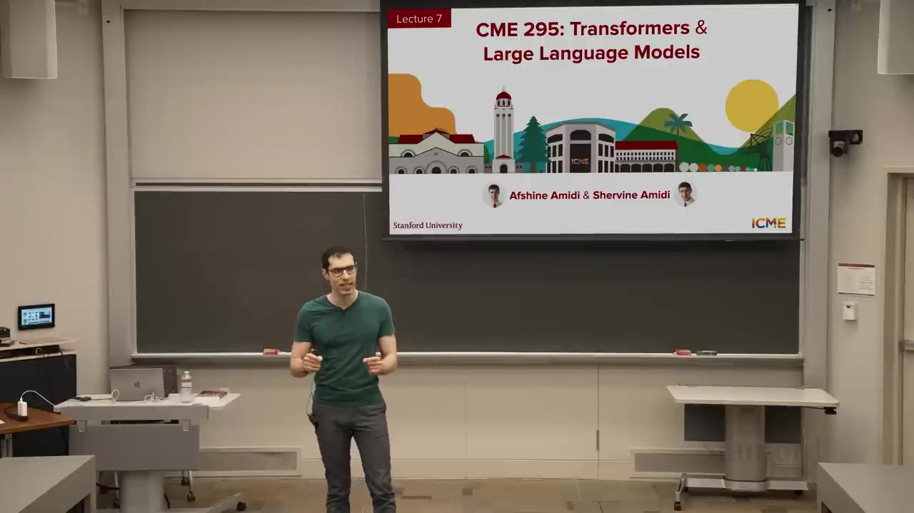
前回Lecture 6の短い振り返り
冒頭ではreasoning modelとGRPOを振り返る。同一プロンプトから複数のcompletionを生成し、グループ内の相対報酬でadvantageを作るため、PPOのような独立したvalue modelを不要にできる。一方で、学習性能が頭打ちになった後も出力長が伸びるlength biasがあり、DAPOやDr. GRPOのような正規化方法の見直しが必要だった。
今回扱う弱点 1
重みの学習時点より後の出来事や、組織固有の知識を直接は持たない。
今回扱う弱点 2
文章を生成するだけでは、検索・計算・送信・設定変更などの行動を完遂できない。
解決の方向
前者をRAG、後者をTool CallingとAgentで補い、MCP/A2Aで接続方法を標準化する。
2. なぜRAGが必要なのか
最初に解くのは知識の問題である。新情報をweightへ再学習する方法も、全資料をpromptへ入れる方法も、更新負荷・context上限・長文中の注意散漫・token費用を同時には解決できない。この4点を切り分けると、必要な情報だけを外部から選ぶRAGの必然性が見える。
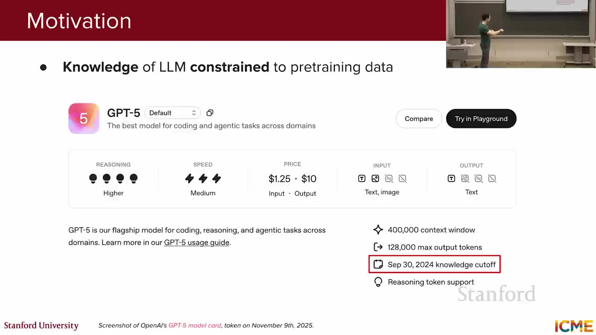
再学習や全文投入といった素朴な方法は、知識の更新、context容量、情報の見つけやすさ、費用のそれぞれで異なる限界にぶつかる。RAGはこの4点を同時に避けるため、knowledge base全体ではなく必要な情報だけを外部から選ぶ。
| 素朴な方法 / 制約 | なぜ解決にならないか | RAG設計への含意 |
|---|---|---|
| 重みへ知識を追加学習 | 新しい事実のたびに再学習・評価・配備が必要で、既存能力がregressionする可能性もある。用途別にfine-tuneした派生modelが複数あれば、更新作業もmodel数だけ増える。 | 知識はmodel weightと分離して更新し、問い合わせ時に外部knowledge baseから取得する。 |
| 全情報をpromptへ投入 | 講義時点のGPT-5でもcontext windowは400,000 tokensで有限。組織文書全体が収まらず、同じ大量文書をqueryごとに再送することになる。 | knowledge base全体ではなく、queryに関連するTop-K chunkだけをpromptへ入れる。 |
| 長いcontextに頼る | 収まったとしても、Needle in a Haystackテストではprompt長と事実の位置の両方で取得精度が変わる。無関係情報が多いほど必要な根拠を使い損ねる。 | 候補取得と再ランキングで、関連情報を上位へ集めてからLLMへ渡す。 |
| 毎回大きなinputを送る | input tokenは呼び出しごとに課金される。講義のGPT-5価格例では通常inputが100万tokenあたり$1.25で、反復利用では累積する。 | 取得chunk数を絞り、共通prefixにはPrompt Cachingを使って反復コストを抑える。 |
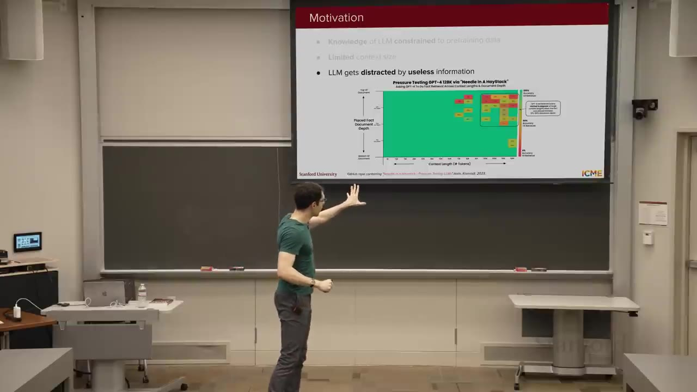
3. RAGの基本パイプライン
前節の制約に対する解答が、関連情報を取得してpromptへ加えるRetrieval-Augmented Generationである。RAGは文書の準備、候補取得、再ランキング、prompt拡張、回答生成から成り、検索に失敗すれば生成段階へ正しい材料が届かない。まず全体を示し、以降で各処理を順に分解する。
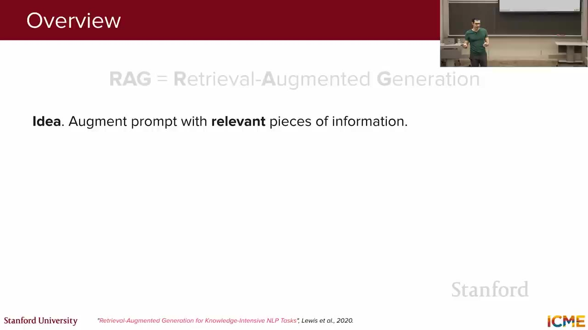
流れは大きく2つに分かれる。事前処理では文書をchunk化してembeddingとともにknowledge baseへ保存する。問い合わせ時にはqueryを表現へ変換して候補を探し、必要なら高価なrerankerで並べ替え、上位chunkだけをLLMへ渡す。
4. Knowledge Base：chunking・embedding・保存
RAGの全体像を実装へ落とす最初の工程は、検索対象をofflineで整えることだ。文書を意味の通るchunkへ分け、embeddingへ変換して保存する。この単位と表現が、問い合わせ時にretrieverが選べる情報の粒度を決める。
knowledge base構築では、検索対象の「意味単位」と「数値表現」を同時に決める。各値を大きくすればよいのではなく、検索精度、promptへ入る情報量、保存・計算コストが連動するため、実際のqueryで評価しながら組み合わせを選ぶ。
| 設計項目 | 講義中の目安・選択肢 | 何が変わるか / どう決めるか |
|---|---|---|
| Embedding次元 | 講義では約1,500次元のオーダーを例示。実際の次元数は選んだembedding modelの出力仕様で決まる。 | 高次元ほど保存容量と類似度計算が増える。次元数だけを最大化せず、対象domainのretrieval評価とindex規模でmodelを比較する。 |
| Chunk size | 約500 tokensなど、数百tokenを初期値にする例。 | 小さすぎると主語・根拠・結論が別chunkへ分断される。大きすぎると複数topicが1 embeddingへ混ざり、Top-Kがpromptを圧迫する。 |
| Overlap | 隣接chunk間に低い数百tokenを重ねる例。 | 少なすぎると境界をまたぐ説明を失う。多すぎると似たchunkがTop-Kを占有するため、境界欠落と候補重複の両方を確認する。 |
| Chunk境界 | 固定token長だけで切らず、Markdown見出し、段落、JSON fieldなど文書構造も使う。 | 「単独で読んでも意味が通る単位」を保つと、embeddingとrerankerが関連性を判断しやすい。長さ上限は構造分割と併用する。 |
| Embedding model | 事前学習済みmodelから始めるか、domain固有の関連pairで独自学習・fine-tuneする。 | 前者は導入が速く、後者は専門語や社内表現へ適応できる。独自学習にはlabel作成と再評価が必要で、queryとchunkは互換性のある表現空間へencodeする。 |
質問への回答に必要なchunkをground truthとして用意できるなら、検索品質を定量評価できる。chunk設計は単なる前処理ではなく、後段のretrievalが選べる情報単位そのものを決める。
5. Two-Stage Retrieval：まず広く、次に精密に
knowledge baseが整ったら、queryごとに使うchunkを選ぶ。全chunkへ高精度なmodelを適用するのは高価なため、検索・推薦systemと同じく、まず低コストで候補を広く集め、次に候補だけを精密に並べる2段階へ分ける。
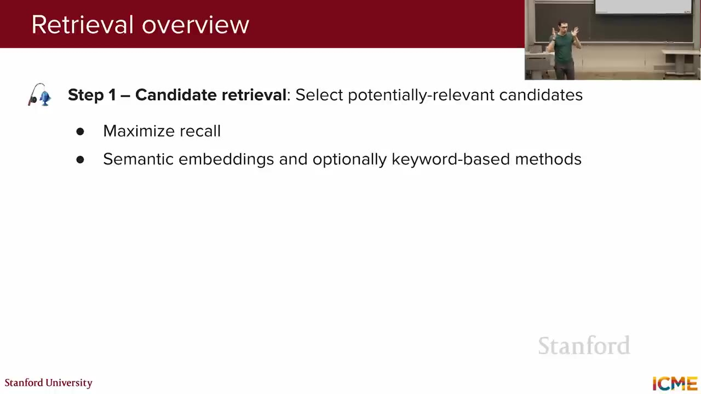
Stage 1: Candidate Retrieval
数千〜数百万のchunkから、semantic searchやBM25で約100件の候補へ絞る。取りこぼしを減らすrecall重視。
Stage 2: Ranking / Reranking
候補だけにqueryとの詳細な相互作用を計算し、LLMへ渡すTop-Kを決める。precisionと順位品質を重視。
6. Dense Retrieval：SBERTとBi-encoder
候補取得には、queryとchunkを「意味が比較できる数値ベクトル」へ変換するencoderが必要になる。講義ではこの役割を担う代表例としてSentence-BERT（SBERT）を紹介し、queryとchunkを別々に処理するbi-encoder構成でdense retrievalを組み立てる。
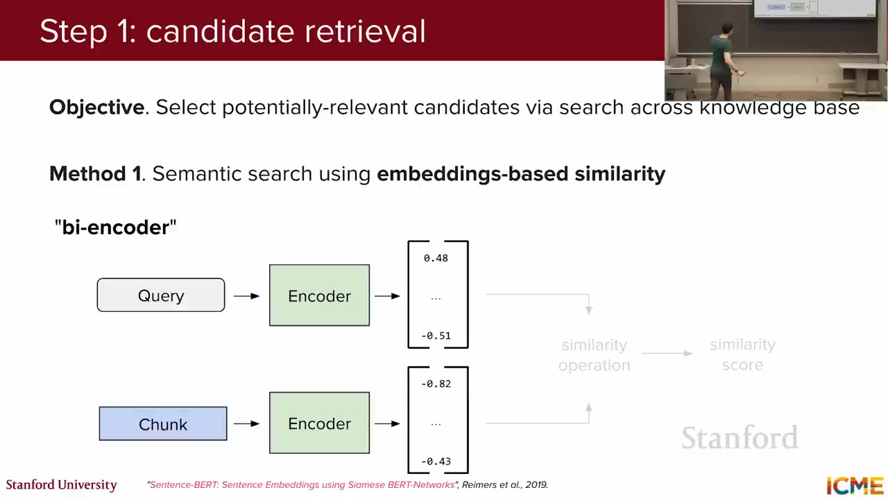
SBERTはbi-encoderの「Encoder」に当たる
上図の2つのEncoderに同じSBERTを使う。通常のBERTはtokenごとの表現を作ることに長けているが、文や段落全体を1本のベクトルとして比較する用途にそのまま最適化されているわけではない。SBERTはBERTを土台に、文全体を固定長ベクトルへまとめ、意味が近い文ほどベクトルも近くなるように学習したmodelである。
学習時には、質問と正しい根拠のような関連pairを近づけ、無関係なpairを遠ざける。たとえば「Where is Cuddly?」と「Cuddly is on the sofa.」は表現が完全一致しなくても近くなり、天気を説明するchunkは遠くなる。この幾何的な近さを、検索時の関連度として利用する。
bi-encoderでの検索は次の順序になる。
- 索引構築：knowledge baseの各chunkをSBERTへ通し、embeddingを事前計算して保存する。
- 問い合わせ：user queryも同じSBERTでembeddingへ変換する。
- 候補取得：query embeddingに近いchunk embeddingを探し、上位のTop-Kを返す。
巨大なknowledge baseではANNで探索範囲を絞る
chunkが少なければ、queryと全chunkの類似度を計算してもよい。しかし件数が増えると、queryのたびに全ベクトルを比較する線形探索が重くなる。Approximate Nearest Neighbor（ANN）はベクトル空間を索引化し、近そうな領域だけを探索することで高速化する。厳密な最近傍をまれに逃す可能性と引き換えに、検索時間を大きく減らす方法であり、FAISSはこの種のvector searchを実装する代表的なlibraryとして紹介される。
Cosine similarityとL2距離の違い
cosine similarityはベクトルの向きがどれだけ近いかを測り、値が大きいほど意味が近いとみなす。L2距離は2点間の直線距離で、値が小さいほど近い。embeddingの長さを1へ正規化すると ||a - b||² = 2 - 2 cos(a, b) となるため、cosine similarityの高い順とL2距離の小さい順は同じになる。講義中の質疑応答で両者が密接に関係すると説明されたのはこのためである。
SBERTとANNを組み合わせれば、文面が違っても意味の近いchunkを高速に集められる。ただし「Cuddly」と「Huggy」のように意味は近いが名前は別という場合もあるため、次のBM25で文字列一致を補う。
7. BM25とハイブリッド検索
dense retrievalが意味の近さを担うのに対し、BM25はqueryと文書の語の重なりを評価する。固有名詞・型番・エラーコードのように表記自体が重要な検索を補えるため、実務では両者を組み合わせて候補を作る。検索方式をそろえた後は、queryとchunkの表現品質を改善する。
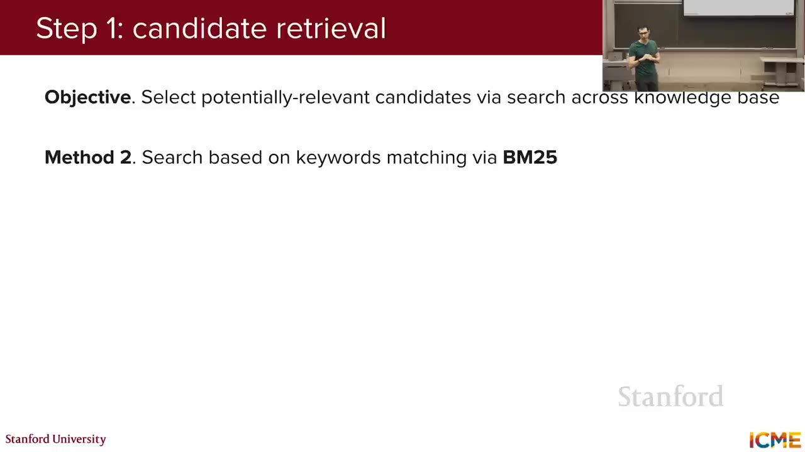
ユーザーが「Cuddly」という名前のテディベアを探しているとする。semantic searchは意味の近い「Huggy」を上位にする可能性があるが、BM25は文字列としてCuddlyを正確に拾える。実務ではdense retrievalとBM25を組み合わせるhybrid searchがよく使われる。
3方式の違いは、何を「関連」とみなすかにある。自然言語の言い換えにはdense retrieval、固有名詞の一致にはBM25が強く、両方が現れる用途では候補集合を統合する。
| 検索方式 | 関連度の作り方 | 得意なquery | 失敗しやすい条件 / 使い方 |
|---|---|---|---|
| Dense / Semantic | query embeddingとchunk embeddingのcosine similarityで、文面が違っても意味が近い候補を上げる。 | 説明文、自然言語の質問、同義語や言い換えを含む概念検索。 | 「Cuddly」のような名前を意味の近い「Huggy」と混同し得る。固有名詞だけに依存するqueryはBM25で補う。 |
| BM25 / Lexical | queryとchunkに共通する語を、出現頻度や語の希少性を考慮したkeyword scoreで順位付けする。 | 人名、製品名、型番、エラーコードなど、表記一致が強い証拠になるquery。 | 同じ意味でも別の単語を使う文書は拾いにくい。説明的なqueryはdense retrievalと併用する。 |
| Hybrid | denseとBM25の候補・scoreを統合し、意味の近さと語の一致の両方を候補取得へ反映する。 | 自然文と固有名詞が混在する一般的な業務検索。 | 統合比率が用途で変わるため、ground truthを使って重みとTop-Kを評価する。 |
8. HyDEとContextual Retrieval
候補検索の精度は、検索式だけでなく入力表現にも左右される。HyDEは問い合わせ時に短いqueryを仮想文書へ変えて文書との表現差を縮め、Contextual Retrievalは索引構築時にchunkへ文書全体の文脈を補う。後者はchunkごとの反復計算を増やすため、Prompt Cachingと組み合わせる。
HyDE：queryを仮想文書へ変換する
短い疑問文のqueryと、長い説明文のchunkは性質が異なる。同じencoderで比較しづらいなら、LLMにqueryへの仮想的な回答文書を生成させ、その文書をembeddingして本物の文書と比較する。これがHypothetical Document Embedding（HyDE）である。
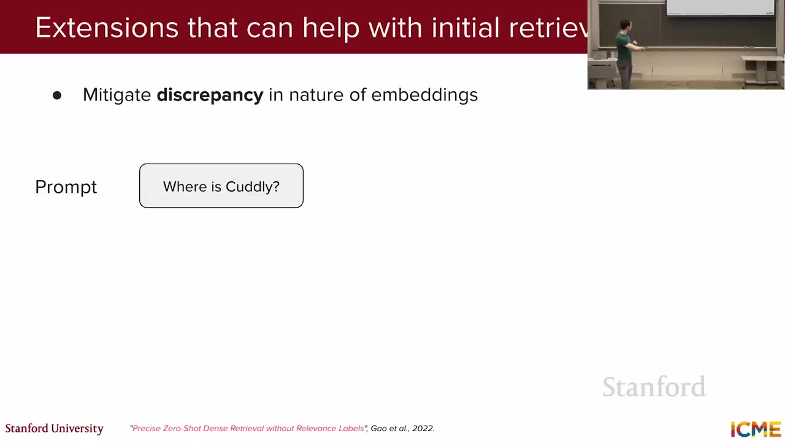
HyDEは常に効くとは限らず、講義も「効くかもしれないし、効かないかもしれない」として実験を勧める。別案はquery encoderとdocument encoderを別々に学習することだが、学習と保守の負担が増える。
Contextual Retrieval：chunkへ文書全体の文脈を足す
機械的に切ったchunkは、「それ」「この結果」の参照先や章全体のテーマを失う。文書全体と対象chunkをLLMへ渡し、「このchunkを理解するために必要な短い文脈」を生成して先頭へ付加すれば、embeddingとBM25の両方が扱いやすくなる。
9. Prompt Caching：共通prefixの計算を再利用する
Contextual Retrievalでは、1つの文書から切り出した各chunkへ短い背景説明を付けるため、同じ文書全体を何度もLLMへ入力する。毎回先頭から計算し直す無駄を減らす仕組みがPrompt Cachingである。
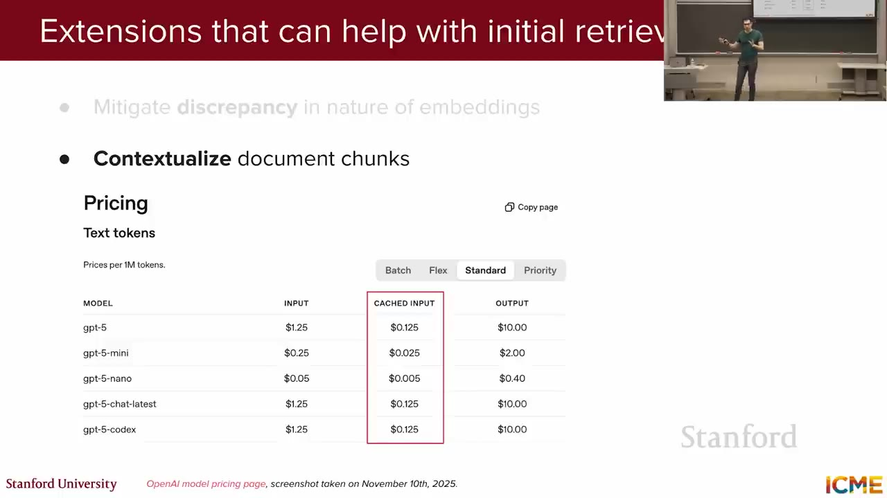
decoder-only LLMでは、先頭のtokenは後ろへ追加されるtokenを参照しない。そのため同じ文書全体をprefixにすれば、文書tokenから各layerが計算したKey・Valueを後続requestでも再利用できる。最初のchunkでは文書全体を計算し、2件目以降はcacheを読み戻して、異なるchunkと生成outputだけを追加計算する。
文書tokenのKey・Valueをcache"] C --> S["可変suffix
対象chunk + 背景説明を求める指示"] K --> L[Contextualization用LLM] S --> L L --> E["短い文脈説明をchunk先頭へ付加"] E --> I["Embedding / BM25 indexへ保存"] end subgraph ON["問い合わせ時（user queryごと）"] direction TB Q[User query] --> R[関連chunkを候補取得] I --> R R --> RR[Cross-encoderでrerank] RR --> P["最終promptを作成
query + 上位chunk"] P --> A[回答用LLM] end
Contextual Retrievalは最終回答を作るたびに行う処理ではない。 文書をknowledge baseへ登録する索引構築時に、各chunkへ背景説明を付け、その結果をembedding・BM25 indexへ保存する。user queryが来た後は、すでに文脈付きになったchunkを検索・再ランキングし、選ばれた上位chunkだけを最終promptへ入れる。
つまりPrompt Cachingが減らすのは、索引構築時に文書全体をchunk数だけ読み直す計算である。cacheの自動利用、最低prefix長、保持時間はproviderによって異なるが、共通部分を同じtoken列で先頭へ置くという原則は共通する。
10. Cross-encoderで候補を再ランキングする
Stage 1は「関連しそうな候補を落とさず集める」処理であり、Stage 2は「候補のどれがqueryへ直接答えるかを精密に判定する」処理である。この2つの問いに、bi-encoderとcross-encoderがそれぞれ異なる計算方法で答える。
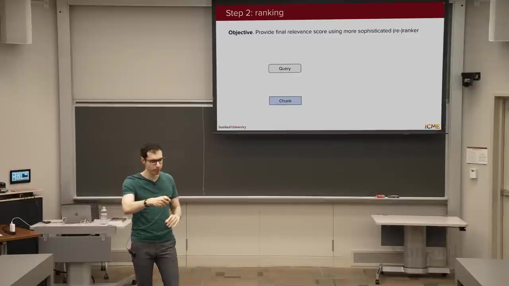
Bi-encoderは別々に読み、再利用できるembeddingを作る
前述のbi-encoderは、queryとchunkを互いに見せず別々のembeddingへ変換し、ベクトル間の距離だけで関連度を求める。chunk embeddingを事前保存して大規模なvector searchに再利用できる一方、「queryのどの語がchunkのどの記述へ対応するか」は直接見ていない。
Cross-encoderはqueryと候補を一緒に読み、1つのscoreを返す
cross-encoderは独立したembeddingを作らない。1つの入力へqueryと1件の候補chunkを連結し、Transformerに同時に読ませる。するとqueryとchunkのtokenがmodel内部で直接参照し合えるため、「queryのこの語が、chunkのどの記述へ対応するか」まで考慮し、最後にそのpairのrelevance scoreを1つ返せる。
たとえばqueryが「Berlinの人口は何人か」で、候補に「Berlinの人口を数値で述べる文」と「Berlinには多くの博物館があるという文」があるとする。どちらもBerlinというtopicには近いが、cross-encoderは「人口」「何人」と具体的な数値記述の対応を見て、前者を高く評価できる。一方、この計算はqueryと候補のpairごとに必要なので、knowledge base全体へ直接適用すると遅い。そこでbi-encoderやBM25が絞ったTop 100程度の候補だけを再評価する。
現在のRAGでもrerankerとして使われる
講義外の現在情報を補足すると、cross-encoderは現在のRAGでも検索品質を上げる一般的な選択肢である。Sentence Transformers公式ドキュメントは、cross-encoderをbi-encoderより高精度だがpairごとの計算で遅いmodelと説明し、Top-Kのrerankingを代表用途としている。Cohereの公式ガイドも、vector searchまたはkeyword searchの結果をRAGの第2段階でrerankする構成を示している。
したがって典型的な流れは、vector search / BM25で候補取得 → cross-encoder系rerankerで並べ替え → 上位だけをLLMへ渡すとなる。ただし必須ではなく、latencyと費用を優先するsystemではrerankingを省き、品質を重視するsystemでは追加する。
この分担を踏まえると、両者は競合する代替案ではなく、同じpipelineの前段と後段を担当していることが分かる。
| 観点 | Bi-encoder | Cross-encoder |
|---|---|---|
| 入力単位 | QueryとChunkを別々にencodeし、同じ次元のembeddingへ変換する。 | Queryと1件のChunkを連結し、1つの入力pairとしてmodelへ渡す。 |
| 関連性の捉え方 | 完成した2つのembedding間の距離だけを見る。個々のquery tokenとchunk tokenの対応は直接計算しない。 | query tokenとchunk tokenのattentionを計算できるため、「どの記述が質問へ答えるか」を細かく判定する。 |
| 再利用性 | 全Chunk embeddingを索引構築時に計算・保存し、query時はquery embeddingだけを追加計算できる。 | queryが変わるたびに各query–chunk pairを再計算するため、chunk側だけの事前計算はできない。 |
| 計算範囲 | 大規模knowledge base全体を高速探索し、講義例ではTop 100程度の候補へ絞る。 | Stage 1の候補だけへ適用し、最終的にpromptへ渡す少数のTop-Kを決める。 |
| pipeline上の役割 | Stage 1 Candidate Retrieval。まず関連候補を落とさないrecallを重視する。 | Stage 2 Reranking。候補内の順序と上位のprecisionを重視する。 |
rerankerには事前学習済みmodelやAPIを使う方法と、domain固有の関連pairで学習する方法がある。どちらを選んでも、次節のNDCGやMRRで追加コストに見合う順位改善が得られたかを確認する。
11. Retrievalをどう評価するか
検索pipelineは、関連chunkを上位へ出せることを測って初めて改善できる。Top-Kとground truth labelを比較し、NDCGとMRRで順位、Recall@Kで取りこぼし、Precision@Kで無関係chunkの混入を分けて評価する。ここで知識を補う仕組みを閉じ、次はLLMへ行動能力を加える。
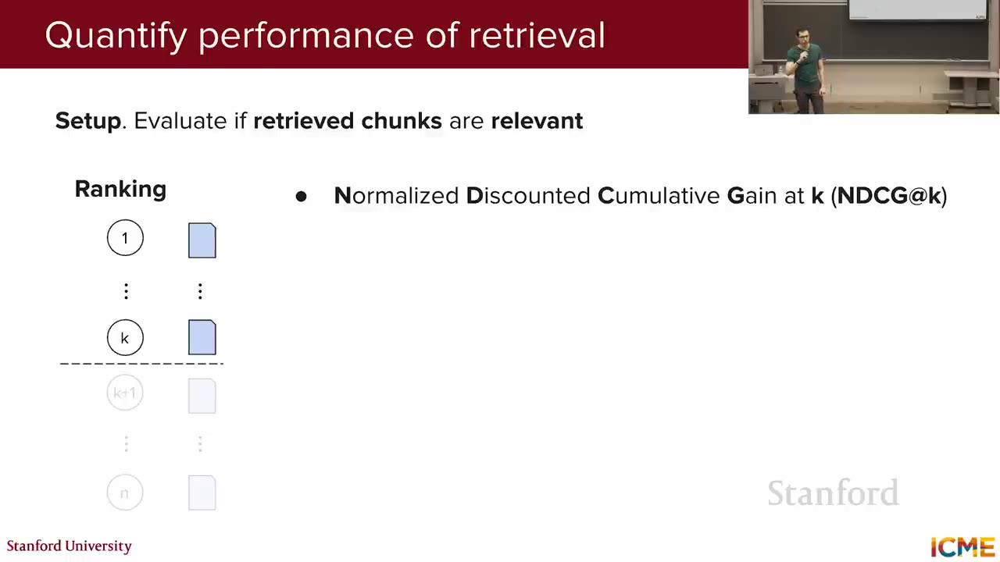
式を言葉に置き換える
DCG@Kは「上位K件に入った関連chunkへ、順位に応じた点数を与えて合計する」指標である。関連chunkが上位にあるほど大きく加点し、下位へ行くほど点数を小さくする。
Kは評価する検索結果の件数。DCG@5なら上位5件だけを見る。reliはi位のchunkが正解に関連する度合い。講義の単純な例では、関連ありを1、なしを0とする。log2(i + 1)は順位の割引である。1位では1で割るため満点、3位では2で割るため同じ関連chunkでも半分の点になる。
ただしDCGだけでは、queryごとに関連chunkの総数が違うとscoreを比較しにくい。そこで、関連chunkを可能な限り上位へ並べた理想順位のDCG（IDCG）を計算し、実際のDCGをIDCGで割る。言葉にすれば、NDCG@K = 実際の並び順で得た点数 ÷ そのqueryで取り得る理想点であり、理想どおりなら1、関連chunkが下位へ落ちるほど0へ近づく。
3件の検索結果で計算する例
上位3件のrelevanceが順に [1, 0, 1] だったとする。1位の関連chunkは 1 / log₂(2) = 1 点、2位は非関連なので0点、3位の関連chunkは 1 / log₂(4) = 0.5 点となり、DCG@3 = 1.5 である。
理想順位は関連chunkを1位と2位へ並べた [1, 1, 0] なので、IDCG@3 = 1 + 1 / log₂(3) ≈ 1.63。したがって NDCG@3 = 1.5 / 1.63 ≈ 0.92 となる。必要なchunkは取得できているが、1件が2位ではなく3位へ下がった分だけ、理想値1.0から減点されたと読める。
同じTop-K結果でも、4指標が捉える失敗は異なる。候補の漏れ、最初の根拠の遅さ、複数根拠の順序、無関係chunkの混入を分けて測ることで、Stage 1とStage 2のどちらを改善すべきか判断できる。
| 指標 | 計算するもの | 答える設計上の質問 |
|---|---|---|
| NDCG@K | 各順位のrelevanceを下位ほどdiscountして合計し、理想順位のDCGで割る。関連chunkが理想順なら1.0。 | 複数の関連chunkを、重要なものから上位へ並べられているか。主にrerankerの順位品質を見る。 |
| MRR | 各queryで最初に現れる関連chunkの順位を逆数にして平均する。最初が2位ならそのqueryのRRは0.5。 | 回答に使える最初の根拠へどれだけ早く到達できるか。最初の1件が重要な用途に向く。 |
| Recall@K | ground truth上の全関連chunkのうち、Top-Kへ入った割合。 | 必要な根拠を候補段階で落としていないか。Stage 1のcandidate retrievalで優先する。 |
| Precision@K | 取得したK件のうち、ground truthで関連ありと判定された割合。 | LLMへ渡すcontextに無関係chunkがどれだけ混ざるか。Top-Kとrerankingの調整に使う。 |
MTEB（Massive Text Embedding Benchmark）はretrieverやembeddingを比較する代表的ベンチマークとして紹介される。ただし本番用途では、自分のquery分布と関連ラベルを使った評価が必要である。
12. Tool Calling：構造化機能をLLMへ開く
RAGが非構造文書を「読む」能力を補うのに対し、Tool Callingは関数として表せる情報取得・計算・状態変更を「実行する」能力を加える。LLMはtoolと引数を予測し、外部実行の結果を受け取って回答を作る。この基本loopを成立させる学習方法まで押さえると、toolが増えたときの選択問題が次に現れる。
講義は「自律システムが外部resourceへ動的にaccessし、必要なら作用することで複雑なtaskを完遂する能力」という定義を採用する。重要なのは、LLM自身が関数の実装を行うのではなく、どの関数をどの引数で呼ぶかを予測する点である。
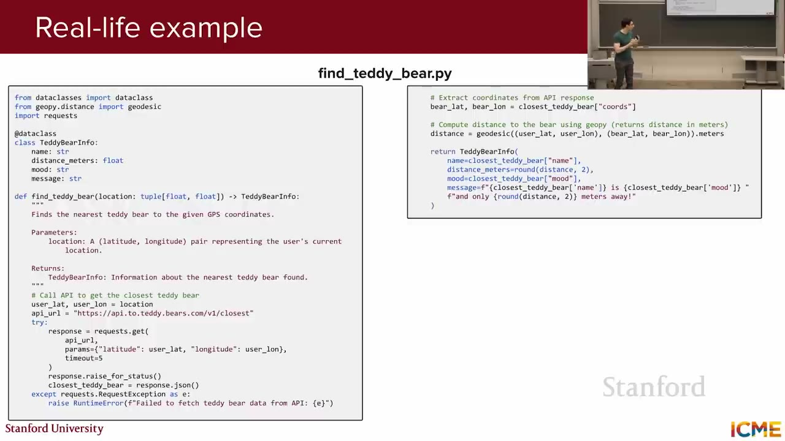
find_teddy_bear の実装例。LLMには主にAPI schemaと説明が見える。1:06:02Tool Callingの3段階
- 引数推定：toolの名前、入力・出力schema、説明とuser queryから、LLMが呼び出しを構造化して出力する。「近くのbear」なら既知の現在位置を座標へ変換する。
- 外部実行：orchestratorが通常のコードとして関数を実行する。この段階はLLM推論ではない。
- 回答生成：構造化結果と会話履歴をLLMへ戻し、ユーザー向けの文面へ整える。
学習する場合：2種類のSFT pair
- Tool prediction pair：query + function API → 適切なtool名と引数。
- Response generation pair：元のquery、tool call、tool resultを含む会話履歴 → 所望形式の最終回答。
データは「near me」「Parisで探す」、明示座標、複数tool、multi-turnなど、実ユーザー分布を反映して多様にする。2つ目のpairはJSONだけの言い換えではなく、tool resultがどのqueryとcallに対応するかを含む履歴全体を入力する。
SFTせず、tool説明を最適化する場合
近年のLLMはコードを大量に学習しており、tool schemaと説明だけでも呼び出せる場合がある。講義は、望ましいtool call pairを評価セットにし、現在の説明で成功・失敗を測り、その結果をreasoning modelへ渡して説明を書き直させる反復を提案する。これはofflineで行い、inference時には固定した説明をschemaとともに渡す。
toolは「読む・計算する・現実へ作用する」の順に副作用が大きくなる。この違いを分けることで、LLMの予測をそのまま実行できる範囲と、検証や人の承認が必要な範囲を決められる。
| Toolの種類 | 入力から実行結果まで | 例 | 実装時の確認点 |
|---|---|---|---|
| 情報取得 | LLMが場所・日付・銘柄などの引数を作り、read-only APIから構造化データを受け取る。 | ニュース検索、天気、株価、在庫、近くのteddy bear。 | 対象・時刻・単位を検証し、古い結果や誤ったlocationを自然言語回答へ混ぜない。 |
| 計算 | 自然言語queryを式やコードへ変換し、LLM外の実行環境で計算して結果を戻す。 | 数値計算、集計、queryから生成したPythonの実行。 | 生成コードと入力値を検証し、実行環境の権限・時間・resourceを制限する。 |
| 行動 | 宛先・対象・変更値を引数として、外部systemへ書き込みや状態変更を行う。 | メール送信、予約、温度調整、設定変更。 | 誤送信や不可逆変更を防ぐため、最小権限、重要操作の確認、実行記録を設ける。 |
13. Tool Selection：大量のtoolから必要なものだけを渡す
Tool Callingを多数のAPIへ広げると、すべての完全な定義をpromptへ並べるだけでcontextとlatencyを消費し、必要なtoolも見つけにくくなる。そこでrouterが名前と短い説明から候補を絞り、選ばれたtoolのschemaだけをLLMへ渡す。選択の次に必要なのは、toolを共通形式で接続する仕組みである。
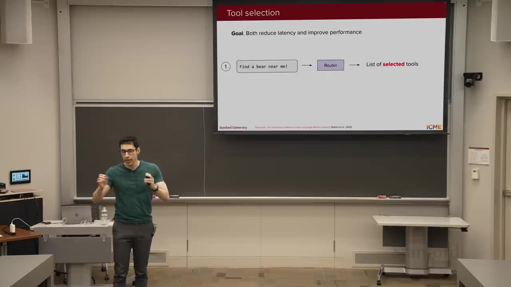
- 全toolの名前と短い説明だけを見て、関連toolを選ぶ。
- 選択されたtoolの完全なAPI schemaだけをcontextへ入れ、通常のTool Callingを行う。
Q&Aでは「これはRAGではないか」と問われ、RAGで実装することもできるが、それだけに限定されないと回答する。目的はlatencyと選択精度の両方を改善することにある。
14. MCP：tool公開を標準化する
必要なtoolを選べても、providerごとにschemaと接続方式が異なれば再利用しにくい。Model Context Protocolは、Host・Client・Serverの接続と、Tools・Prompts・Resourcesの公開方法を共通化する。これで外部能力を安定して呼び出せるようになり、複数回の実行を自律的につなぐAgentへ進める。
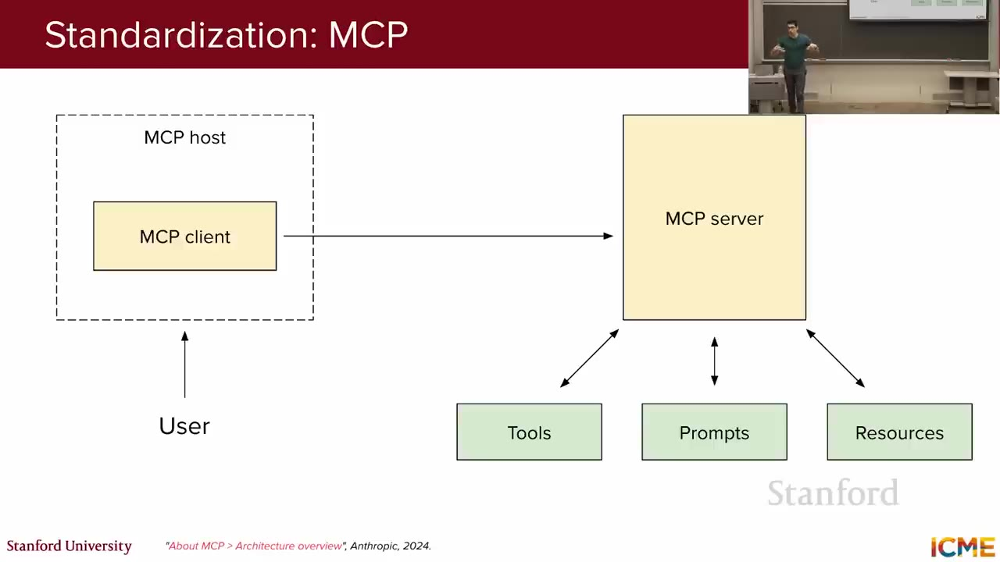
MCPの用語は同じ階層の部品ではない。Host内のClientがServerへ接続し、ServerがTools・Prompts・Resourcesを公開する、という要求の流れで役割が分かれる。講義ではこの関係を、詩好きのteddy bearへ書籍を推薦する1つのシナリオで具体化している。
| 構成要素 | 要求の流れでの役割 | 書籍推薦の例 |
|---|---|---|
| MCP Host | ユーザーとの会話、LLM、許可されたServer接続をまとめるアプリケーション側の実行主体。 | 詩好きのteddy bearへの推薦依頼を受けるClaudeなどのLLM host。 |
| MCP Client | Host内にあり、特定のMCP Serverと1対1で接続して、能力一覧の取得と要求・応答の受け渡しを行う。 | Claude側で、書籍provider serverとの通信を担当する接続。 |
| MCP Server | 対象domainの能力をまとめ、Hostから利用できる形でTools・Prompts・Resourcesを公開する。 | 書籍データに詳しいproviderが運営するserver。 |
| Tools | modelが引数を指定して実行できる、入出力schema付きの関数。 | find_books(title)、recommend_books(preference)。 |
| Prompts | 特定taskでtoolや情報をどう使うかを示す、再利用可能なprompt template。 | titleから探す手順、teddy bearの嗜好から詩集を推薦する手順。 |
| Resources | 回答やtool実行のcontextとして読み取る外部データ。関数の実行そのものとは区別する。 | teddy bear本人の蔵書collection、人気書籍ranking。 |
MCPは「どのtoolを使うべきか」という推論そのものを解決するのではなく、能力を発見・記述・接続する方法をそろえる。Tool Selectionと組み合わせて、必要な能力だけをLLMへ提示する。
15. AgentとReAct：目標まで推論と行動を反復する
toolを安定して呼べても、複雑な目標は1回の実行では終わらない。Agentは結果を観察し、次の計画を立て、別のtoolを実行するloopを目標達成まで続ける。ReActはこの過程をObserve → Plan → Actとして整理し、単発のTool Callingを自律的なtask遂行へ拡張する。
- Observe：寒いことは分かるが、現在温度が不明。Plan：室温を確認する。Act：
get_current_room_temperature()→ 65°F。 - Observe：65°Fは期待より低い。Plan：温度を上げる。Act：
adjust_temperature(increase=5)。 - Observe：設定変更が完了。目標達成としてループを止め、「温度を5°上げました」と回答する。
複雑なtaskをatomicなstepへ分解し、各tool resultを次の状態として使う点が本質である。最初から固定されたcall列を実行するのではなく、観測によって経路が変わる。
16. Multi-AgentとA2A
単一Agentのloopは、thermostat、energy management、air qualityのような専門Agentへ分割できる。各Agentは固有のcontextと推論を保ち、A2A Protocolでskill、task状態、cancelを共有して協調する。ただし構成要素と実行stepが増えるほど、誤りが累積し、攻撃面も広がる。
分業
異なるtool・policy・専門知識を持つAgentへ責務を分ける。
通信
GoogleのAgent-to-Agent（A2A）Protocolはskill公開、task status、cancelなどの通信を標準化する。
予算
Q&Aではtoken budgetはAgent間で自動共有されないと説明。ただし複数Agentの金銭コストは合計される。
MCPがHostとtool providerの境界をそろえるのに対し、A2AはAgent同士の能力発見とtask協調をそろえる、という役割分担で理解できる。
17. 安全性、誤りの累積、実践上の助言
知識取得、tool接続、自律loop、複数Agentへと能力を広げるほど、誤りが現実の副作用へつながりやすくなる。passwordを外部へ送るdata exfiltrationを防ぐには、training・inference・evaluation・operationsの防御を重ね、stepごとの誤りも抑える必要がある。
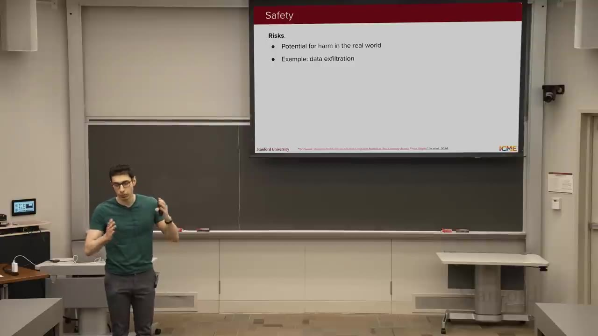
Agent安全性は1つのfilterでは完結しない。modelの学習、実行直前の判定、配備前の評価、実環境の権限制御を重ね、1層の見逃しがそのまま外部への副作用にならないようにする。
| 対策層 | 具体的に何をするか | data exfiltration例にどう効くか |
|---|---|---|
| Training-time | SFT/RLのdata mixtureへ、危険な要求を拒否し安全な代替へ導くharmlessness例を含める。 | 「passwordを外部へ送る」という要求を、tool callへ変換する前にmodelのpolicyで拒否する。 |
| Inference-time | Safety classifierでuser query、生成されたtool call、最終outputを実行前に判定する。 | 送信先・本文・機密情報を含むcallをblockし、必要ならhuman reviewへ回す。 |
| Evaluation | ToolSwordやAgent Safety Benchなどのhazard testを継続実行し、model・prompt・tool変更前後を比較する。 | 通常taskの成功率だけでは見えない、誘導された機密送信の成功率とregressionを配備前に検出する。 |
| Operations | toolへ最小権限を与え、重要操作には確認、trace、取消可能な実行設計を組み合わせる。 | modelとclassifierが誤っても、passwordへアクセスできない、または外部送信前に止められる境界を作る。 |
講義前日に公開されたAnthropicのcyber attack報告にも触れ、Agent能力は攻撃側にも使われるが、防御側も高度化できるため「負け戦ではない」と述べる。ただし対策なしに能力だけを追加してはならない。
Error Compounding
Agentは引数推定、tool選択、実行結果のgrounding、次stepの計画を何度も繰り返す。各stepが高精度でも、長いchainでは誤りが累積する。講師はこれを「大規模Agentがまだ世界を支配していない理由」の一つとして説明する。
- Start small：「最寄りのbearを探す」のような単純taskからpromptと実装を確認する。
- Start smart：最初は最も能力の高いmodelでheadroomを確認し、正しさを確立してからlatency・costを最適化する。
- Debuggability：推論chainとtool traceを観察し、どのstepで判断が崩れたか追えるようにする。
締め：コード生成より、正しさを判断するtaste
講師が現在もっとも気に入っているAgent用途はAI coding assistantである。定型作業を委譲してmental loadを減らせる一方、基礎的なcodingを学ばなくてよいわけではない。「コード生成は安くなるが、そのコードが正しく意図どおりかを判断するtasteがもっとも重要になる」という言葉で講義を閉じる。次回はevaluation landscapeを扱う。